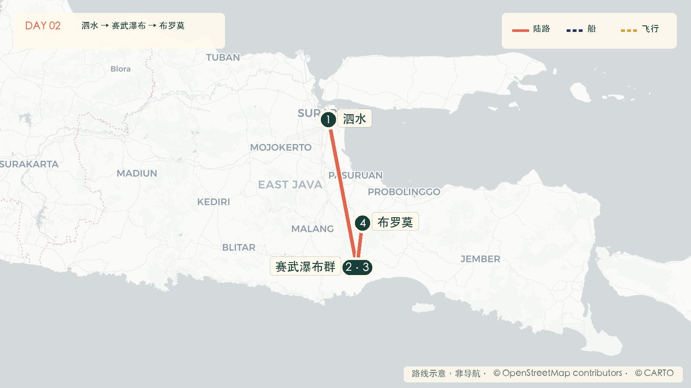
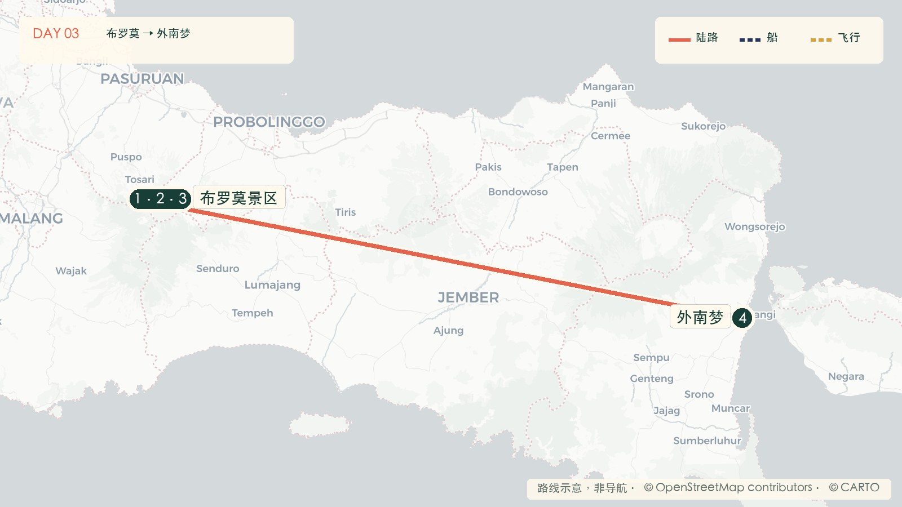
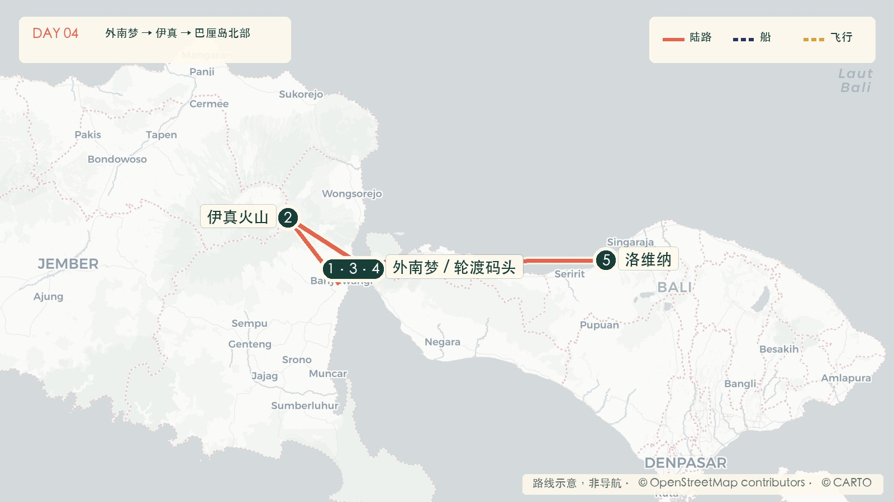
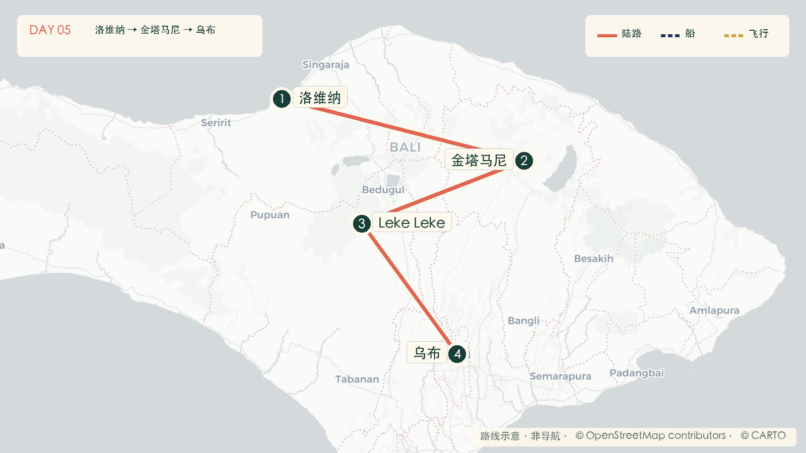
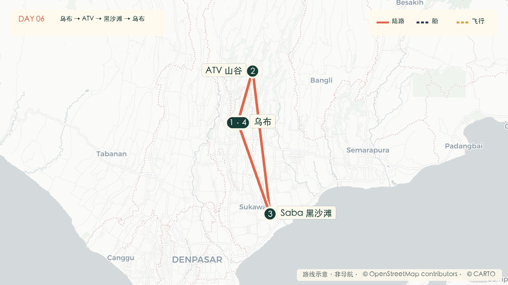
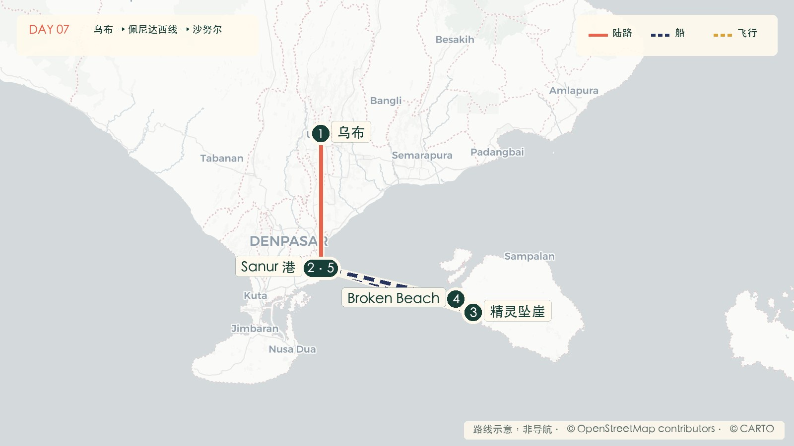
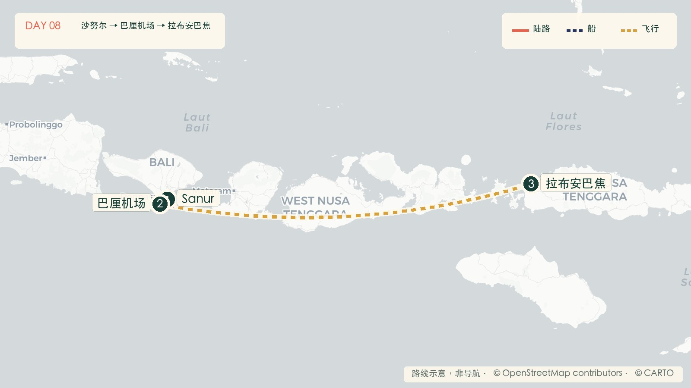
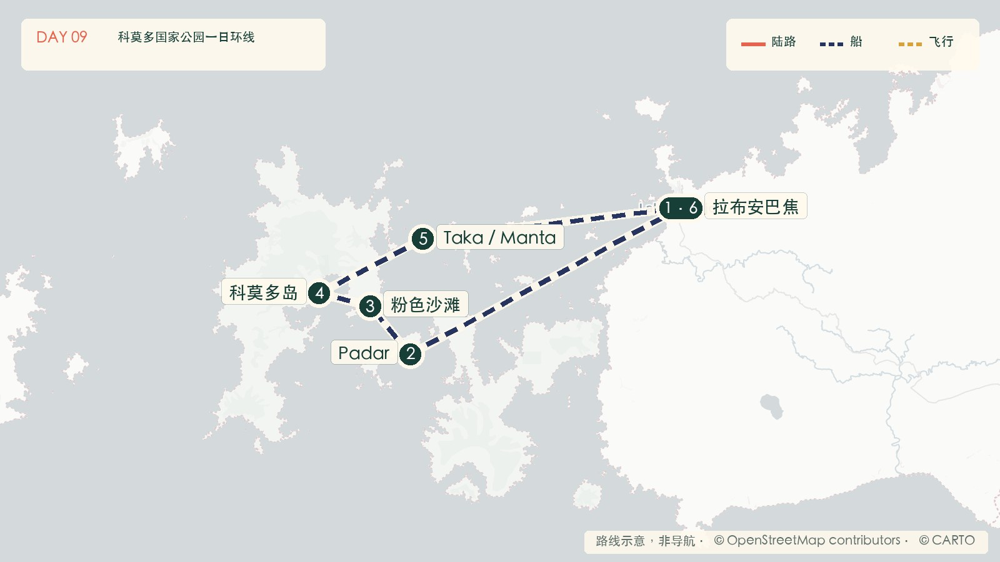
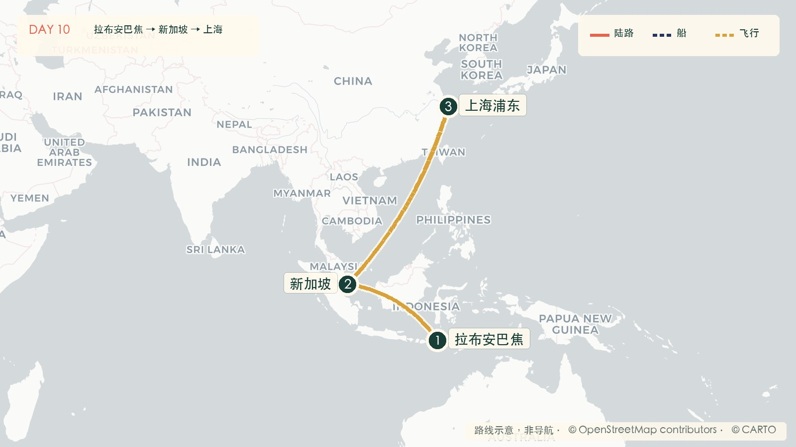

01
09.27 · SUN
抵达东爪哇
上海浦东 → 短转机 → 泗水机场 → 市区酒店落地、休息、准备 Java 段

今天怎么走
- 上海浦东出发
接受一次短转机，优先行李直挂；目标转机 2—4 小时、总时长 10—14 小时。
- 抵达泗水
入境、取行李、少量取现，预订司机在到达厅举牌接机。
- 入住，不再赶路
酒店附近吃熟食，和 Java 包车方确认第二天 07:00 接车。
- 整理瀑布装备
防滑鞋、速干衣和防水袋单独装小包，主箱第二天留车上。
Indonesia · 10 days / 9 nights
这版不讲景点百科，也不需要点选。10 天行程一次全部展开：当天路线、主要项目、时间安排、注意事项和酒店，全部放在同一页。
Route verdict
三人机票以 ¥14,500—20,000 为下单区间。国际返程只买同一订单、行李直挂的联程票；如果没有合适的新加坡联程，就改经雅加达，不用分票硬压转机时间。
Daily itinerary
地图中的数字就是当天顺序；每张图只呈现当天活动范围。路线为规划示意，不替代现场导航。
09.27 · SUN
接受一次短转机，优先行李直挂；目标转机 2—4 小时、总时长 10—14 小时。
入境、取行李、少量取现，预订司机在到达厅举牌接机。
酒店附近吃熟食，和 Java 包车方确认第二天 07:00 接车。
防滑鞋、速干衣和防水袋单独装小包，主箱第二天留车上。
09.28 · MON

早餐打包，专车前往赛武瀑布，预计 3.5—4.5 小时。
先在上方看全景，再按天气和体力决定是否下谷；谷底约 2—3 小时。
水位安全、没有失温迹象才加走；天气转差则直接返回。
车程约 4 小时，途中吃晚饭；入住后不再安排夜游。
09.29 · TUE

不追日出，把全程唯一一次凌晨起床留给伊真。
先走视野开阔的观景点，再进入沙海，避开日出后的车流高峰。
按自己的节奏走台阶；风沙过大时戴 N95，不在护栏外拍照。
约 6—7 小时，途中完成午餐和晚餐，抵达后准备健康证明。
09.30 · WED

带健康证明、头灯、防滑鞋、保暖层和合格防毒面具。
全程跟向导慢走；蓝火区域能否进入，以当天风向和现场管制为准。
洗脸并换掉带硫磺味的外层，补水后再开始跨岛移动。
吉打邦到吉利马努克约 1 小时，再包车约 2.5 小时到洛维纳。
10.01 · THU

不安排凌晨追海豚，让伊真之后的身体完整恢复。
选择正对 Batur 火山的餐厅；云层太厚则缩短停留。
往返约 60—90 分钟，路线比赛武轻松，但雨后仍需防滑鞋。
入住后只安排酒店晚餐或 SPA，不再跨区移动。
10.02 · FRI

不塞王宫和市场，把完整时间留给体验型项目。
选择 90—120 分钟小团，穿包脚鞋和长裤，开始前试刹车。
换掉湿衣，休息至少 1 小时，再安排下午活动。
海边只看景不下浪，晚餐后整理佩尼达一日小包。
10.03 · SAT

主行李送当晚酒店寄存，提前 45 分钟到快船码头。
只在上方观景区域活动，不下陡坡去海滩。
涨潮、大浪或护栏区域湿滑时，不进入天然池边缘。
水流合适才下水；不抢最后一班船，回本岛后直接入住。
10.04 · SUN

主行李正常托运，充电宝和贵重物品随身携带。
境内航班也不压缩机场时间，给道路拥堵和托运行李留余量。
优先不晚于 14:00 起飞的航班，发生延误仍有缓冲。
和船方复核次日接车、救生衣、路线、园区费用及天气。
10.05 · MON

快艇小团约 06:30 出发，上船先检查救生衣和当天海况。
按体力停在中段或顶端，每人携带至少 1L 水，烈日下不硬撑。
不带走沙子；进入园区后始终跟随 ranger，不跑、不蹲近拍。
只有低流速时才穿救生衣下水，返港后继续住一晚。
10.06 · TUE

在柜台再次确认行李能否直挂 PVG，保留两段登机牌。
周二优先使用 Scoot 班期；最终时间以出票页面为准。
同一订单可接受短转；若需要入境取行李，则必须改成至少 7 小时。
不再返回巴厘岛，保险、登机牌和费用票据保留至回国。
Booking order
PVG→SUB 与 LBJ→PVG。三人总机票进入 ¥14,500—20,000 再下单。
DPS→LBJ 选中午前后航班；科莫多快艇安排在返程前一天。
两间含税每晚不超过 ¥2,500，优先早餐、评分 8.5+、24 小时前台。
伊真、佩尼达和科莫多均以开放状态、火山预警和海况为准。
价格为 2026-07-23 查询后的规划区间，不是锁定报价。地图底图：© OpenStreetMap contributors、© CARTO；路线为行程规划示意。